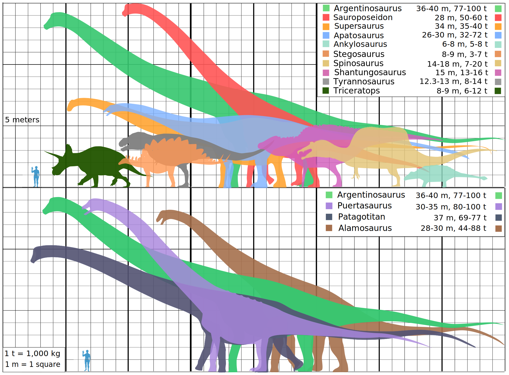

Dinosaurs ruled the Earth from about 300 mya to about 65 mya. There were few natural preators to dinosaurs besides for other dinosaurs. And they ranged from 2 pounds to 138 tons! This not only shows the biodiversity of these exinct creatures, but also shows the amazing size of these beutiful creatures.
Image by Wikimedia Commons from Wikimedia Commons.
These are some of the greatest creatures the world has ever seen. A part of that is that there biodiversity levels are through the roof with during the two dinosaur periods there are over 700 species and there are more being discovered every year. Some exinct creatures like pterosaurs are often mistaken by dinosaurs but they are not. The definition of a dinosaur is, "Dinosaurs are extinct animals with upright limbs that lived on land during the Mesozoic Era (252 to 66 million years ago)." (National Park Service). Also some people catagories creatures like the mosasaurs which because they lived in water already classifies it out of the running to be a dinosaur so they are their own thing. Also any animal that lived before or after the Mezazoic Era (252 to 66 million years) is not a dinosaur so the Dimetrodon which is a predecessor to the dinosaurs is not a dinosaur. Saltwater Crocodiles which are estemated to be 200 million years to 65 million years old as a spieces and are still alive today. And since they lived after the dinosaurs, they are not a dinosaur. Megalosaurus a predecessor to the Tyranosaurus Rex is a dinosaur because it lived during the Jurassic period and it walk on less than 5 legs, spent all of it's time on the ground and was a reptile. All of these creatures have at least one of the things they need to be classified a a dinosaur.